みなさんみにゃさーんっにゃー
明日はテスト最終日かーらーの
大阪公演初日ですよー
気持ちの切り替えそれな！
次回からきっとブログ復活だね( ^ω^ )
みんないっぱい遊びにくるんだよー
約束だぞー聞いてんのかおいこらーふへへ
えっとーそうですね
近況報告ゆーて、まあテストですよね。うん
あっちょっと素敵なお仕事にも
参加させていただきました(〃ω〃)
そんな感じでーすー伝わったかなー
生田様に最近なんかいじられる。
今度いつか ちまちまとお泊まりする。
お互いすっかり忘れてたけども
あしゅとお茶する。
よーし明日も頑張るぞー！

1028 最近はダブルピースが多いけどマイブーム?
最近はダブルピースが多いけどマイブーム?v(・ω・)vにゃ
1029今一番したいことは何ですか?(^o^)AKBさんの「君のことが好きだから」のダンスを覚えたい!!
1030プレゼントされていくらあっても困らないものってなに?
ちゅーっ(*/ω＼*)
はい真面目に答えた方がいいのかしら。いや真面目だが。
りぼんとか!
でもりぼん買うの、おとこのこは恥ずかしいかな。
1031質問ってどこから選んでるの?前回の記事?それとも過去の記事?前回の記事の緊急+過去の記事から順番に(^^)
1032乃木坂46受けるとき、親に反対された??反対するどころか応援してくれました(^^)＊
ただ、「お勉強も活動も頑張れるなら受けてみたら?」って言われたかな。
1033挨拶の時とかのキャッチコピー作らないのかな??んんん最初の頃はちょっと考えたりもしたんだけどね
('・ω・`)
なにかいいフレーズありますかー??
1034剣道ってどう思う??ひめたんのまわりで剣道してる人ってあんま聞かないんよねー。
ユニフォームかっこいいよね//掛け声もっ
んー応援する(^O^)♪
1035化粧講座良かったらよろしくです←1036新しい美容院もう見つけた?それともメイクさんとかにしてもらうの?いつもお世話になってるメイクさんにやっていただいてます!
1037教師ってどう思う?いいじゃんっ(*^^*)
ひめたん楽しかったクラスの先生のことは今でもずっと覚えてるよっ
素敵な先生になって下さい♪
1038絶チルって、超能力のアレ?ひめたんはリアルタイムだったっけ...?そっそ(ω)
ひめたんリアルタイムで見よったよ。当時小学6年生!
1039「おしい!広島」のサイト見ました?見たみた(^^)☆
おしいはおいしいんだお。うん!
いつかおいしい!広島県にならんかなー...
1040早口言葉練習してますか?ww半年前に部活引退してから全然やってない(∀)てへぺろ
おかげでら行がはっきり発音できなくなりつつあります...。
これ先輩にばれたらああごめんなさいっ
そして後輩にばれたら会わせる顔がないです。
あんなに怒ってきたのに☆☆
1041ディズニーランドのお姉さんって、ダンサーみたいな人?スタッフみたいな人?アトラクションのお姉さんもショップのお姉さんも楽しそう(o>ω<o)
そこにはあんまこだわってなかったなあ。
とにかく夢の国で働きたいのひめたん。
1042塾とか行ってますか?中学生の時は通ってましたよ(*^^*)
とっても素敵な塾でした。塾ってかあれは家!家族!
1043広島のときは、アルパークとかよく行った?アルパーク行ってましたよ!
スクール生時代に毎年イベントもしてたもん(^^)☆
あと東棟は、朝早くに並んでたまごっち買った思い出も。うん!
1044焼き肉好きカナ?好きすき(*/ω＼*)
1045広島が恋しくなるのはどんなとき☆?地元の友達とメールしてると「ああ帰りたい*\'`*」
ってなるー。
でも選抜入るまでは帰りませんきっぱり!
1046てへぺろ←意味はわかんない。おしえて?てへ + ぺろ =てへぺろ☆
1047好きなTV番組教えてー(=^エ^=)1048朝のニュースとかは、何て番組を見てる?ひめたんのテレビトーク◎
朝はめざましテレビで始まります。
夜はドラマはあんまチェックしてないかも('・ω・`)
バラエティは好きですよ!
乃木どこも好きだけど3回に1回は寝てたりする。え
でも録画してるから♪
1049裁縫しないのか〜ボタンとか取れたら困るんぢゃないの?1050日芽香ちゃんならすぐに裁縫できるようになると思いますよ?裁縫覚えてみてはどうですか?ボタン取れたらいつか付けてもらおうって思ってとっておく。
気づいたら無くなってる('・・`)
お裁縫はできるほうがいいんかなあ。お裁縫する気なくて地元にソーイングセット置いてきたんだけどなあ☆
またろてぃーと街散策したい！
明日から大阪
千秋楽までよろしくお願いします♪
気をつけてきてね！梅雨はいつからなのー
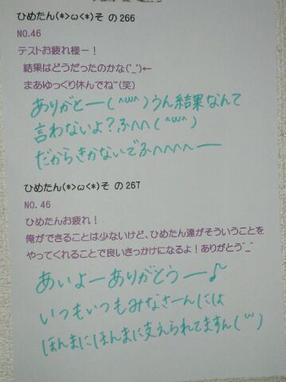
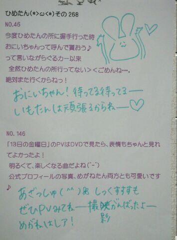
(＊´・ω・＊)
ひめたん大図鑑とは何か。それは、いわゆる
「過去の質問返しをまとめたもの」って
感じかな。
過去なので時制とかおかしなことになる質問も
中にはあるかもだけど、
ま、そゆことなんでね(*^^*)

1008 誰になら推し変してもいいですか?
誰になら推し変してもいいですか?えーそんなこと聞くの...?
1009ひめたんのニックネームって誰が考えたん?初めてひめたんって呼んだのは妹(*^^*)
1010ひめたんは、ツンデレじゃないのかな?(笑)でーれでれです。照。
つんつん要素は存在しないんだこれが。
1011特に思わず広島弁全開の時ってどんなシチュエーション?今日の入学式のあとのHRで早速広島弁全開だったみたい。
もう方言を封印するのは無理だとわかりました(\'・ω・`)にゃ
1012ひめきゅんより上の位とかあるの?今は存在しないけど...
作りましょうか(∀)☆
1013ヒールかぁ〜疲れない?男だからまったくわからんけど、ヒールってどんな感じ??ヒール疲れますよ(\'・ω・`)
でもヒールを履いてこそ素敵なあいどる的なポリシーね。それだけで頑張れますお。
試しにお店で履いてみてはどうかしら☆?
無理かぁわら
1014遠征大変じゃない?荷物の準備と朝早い集合が辛いけど
出発してしまったらもう幸せ(*\'∀`*)♪
修学旅行みたいな楽しさです//
1015うぇっさい(\'▽`)ノこれから広めようと思ってんだけどどうかな?wうぇっさい(\'▽`)ノひめたんもご協力しますよ♪
うぇっさい、うぇっさーい(\'▽`)ノ
1016電車とかで寝ちゃって乗り過ごしたりすることってある?ありますよ(\'・ω・`)
寝過ごすのも大変だけど、寝ぼけて2っくらい早い駅で降りたことも違う路線の電車に乗ったこともありますよ。
事故事故っ♪♪
1017どこに買い物に行くことが多いですか?渋谷・原宿、
あとアメ横も好きですっ(^ω^)
アメ横の楽しさねーもうびっくりする☆!
1018アンダーメンバーと選抜メンバーが遊ぶことってあんまりないんですか?そんなことないよ＼(^O^)／みんな仲良しだよ♪
ちなみにひめたんが初めて一緒に遊んだのはかずみさん(高山一実chan)!
1019お小遣いっていくらぐらいなの?使い道は?不定期ってか必要な時に必要な分だけもらってる(∀)☆
1020豆柴犬は好き?可愛いよねー豆柴ちゃんね∪・ω・∪
1021乃木坂の紫色の垂れ幕、気付いてもらえましたか?垂れ幕作成に至る秘話、じっくり読ませていただきました。
私たちもサッカーのサポーターのみなさんの前で歌うにあたってもちろん楽しみがおおかったけど、不安もありました。
でも乃木坂の垂れ幕見て(あっ私たち乃木坂のために来てくれたんだ。)ってなんだかホッとしました♪運動会でぱぱままの顔見つけたような気分(*^^*)
1022"ちゅーしちゃうぞ"ってPV撮影の時にひめたんが考えたのカナ?台本の台詞をひめたん流にアレンジしてひめたん流のニュアンスで提案したフレーズであります
(//ω//)
1023中学校で、何かの部活がなくなったとかありますか?ひめたんが入学式した時はすでに存在してなかったけど昔は演劇部があったらしいです(\'`)
1024もし自分の部活がなくなるとしたら、どうしますか?放送部は大好きだったから、どうにかして残してもらうと思う。
だって今まで頑張ってきたなら最後まで続けたいじゃん!
交渉してみてはどうでしょう(\'・ω・`)?ひめたん悲しいよ?
1025握手に向かって全力でネタを仕込むファンをどう思う?熱いですねーそゆの好きよ//
みなさんが熱いとひめたんもテンション上がります
∩^ω^∩
これからも全力で握手しましょーう!
1026これからはコメントするときタメでもいいですか?どうぞどうぞ(w)☆
1027太鼓合宿でキツイ俺にエールして下さいww頑張れー!
辛くなったらひめたんを思いだすんだよ(`・ω・\')
ひめたんもみなさんに負けんようにいろいろ頑張るー!!!
そうそう。テストはじまたよー
今日はねーそうだよねー
いやー世界史なんて困ったよね( ^ω^ )うん
でもいいんです！
明日からの教科は真面目に頑張るって決めて
ちゃーんとお勉強しだしたんで問題なーい
テスト終わったままのノリで
大阪公演初日迎えるので待っててね♪
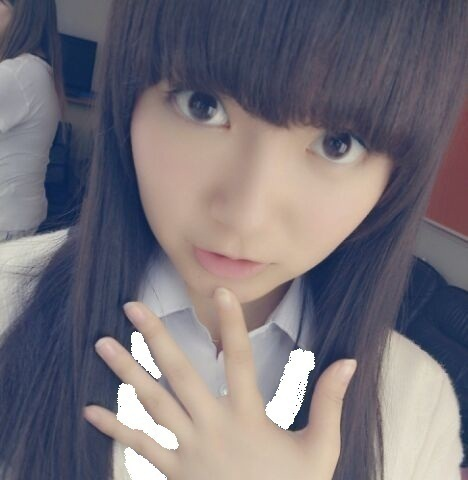ほれ。
いつもはエフェクトかけてみたり
ちょっと写めです遊ぶんだけど
そんな時間はないのだ。
レアだぞー♪
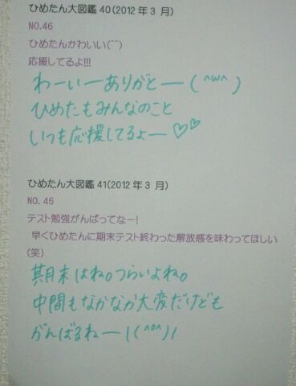
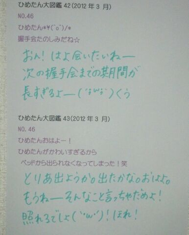
(＊´・ω・＊)
昨日は撮影してきました(ω)
もうね楽しかったのー♪
どんなことしたのーとかゆーのは
また情報解禁されたら書きます！

989 ひめたんの中学校にこの春入学しま〜す。
ひめたんの中学校にこの春入学しま〜す。入学おめでとう!
超ステキな学校だからね。超いい先生ばっかりだからね。
一年生の教室からは瀬戸内海も見えるからねー(*/ω＼*)
990坊主で、筋肉質な男ってどう思いますか?991男の腹筋とか好きですか??ざ☆おとこのこ!
ええやんかっこいいやんっ//
992広島で活動してたひめたんと今の乃木坂で活動してるひめたんは何処がどうかわったって自分で思うか詳しく聞かせてwまず全体的に成長したかな、と(*^^*)
SPL∞ASH（スクールで活動していた時のユニット名）の時はあんま深く考えてなかったけど、とにかく歌もダンスも超全力!
自分たちで提案しなきゃ何もできないから、日々研究。
いろんなジャンルの曲に挑戦するのが新鮮でした♪
それからSPL∞ASHのひめたんはMCとかフリートークは苦手←
リーダーを任せていただいたのですが名前だけで、何もリーダーらしいことはしてあげられなかった...立派な連絡網を作ったくらい(^ω^)わら
乃木坂のひめたんはちょっと殻が剥けた感。
歌やダンスは変わらずだけど、他にもいろいろ大切にするようになりました。
あMCが大好きになりました♪
超MCしたいもんっ(o>ω<o)!
ブログ更新は昔も今も頑張ってます☆
SPL∞ASHで記録した150回更新まであとちょっとやー!!
とまあこんな感じですっ
993コメントするとき、1回でたくさん書くか、何回かにわけて少しずつ書くかどっちがいいですか?どっちも嬉しいけど、何回かにわけて少しずつ書くのが嬉しいかなっ
名前いっぱいみて、あーまた来てくれたー(ω)にこり
ってしたいもんっ♪
994 どんな人とでも緊張したいで話せる方法は?神様さま校長さまと言われたらひめたんも緊張しますけれどもー、
んんんとりあえず、とびっきりの笑顔と明るい声で
どんな相手さんでも心を開いてくれるんじゃあないかな。
あれー答えになってないような気がするのは
なんでー(\'・ω・`)
995毎日メールしてる男子が近くにいるとさりげドキドキしてる(笑)これは恋ですかね!?wそれはねえ。
恋ですよ(*^^*)ぽ
んん羨ましいねえっ
996ひなちゃんって中2には見えないよね。きっと後数年したらすごい美少女になると思うよ。ちはるんも。ひめたんもそう思わない?同意。その通りですよ!
今すでに可愛いからうらやましいですね。
本当に。
ひめたんなんて歳を重ねるごとに可愛さがなくなってくるよお(ノω;`)
自分で言ったのに悲しくなってきた。
うわー誰か助けてー!まだ15歳なのにー!
997料理が苦手だって言うけど上京して食事はどうするの?ままと住んでるから、ままが作ってくれるの♪
だからいつまで経ってもお料理が上達したいのね。納得。
だめだこりゃ(^O^)☆
998料理は出来ないとね!まずは定番のロールキャベツとか作ってみませんか?ロールキャベツででびゅするの(ω)?
めちゃハードじゃん!え簡単にできるもの??
999服とか一人で買いにいきますか?行かない!
行ったことないです本気で!
ままと行くか、ままとすずが行くか。
あんれ?なんでひめたんの服ななのに、ままとすずが買いに行くの?そゆこともあるっ(*^^*)
1000朝コメントしても見ててくれてるよね(*\'∀`*)?もちろんもちろん♪
1001桜に関しての思い出ってある?桜系で好きな曲なにかな?幼稚園から去年までずっと幼なじみのみんなでお花見してました(*\'`*)
好きな桜ソングは、SAKURA/いきものがかりさん、サクラサク/北乃きいさんとか!どっちもお別れソングだけどそんなことあ気にしない♪
1002毎日欠かさずやってることってなーに?お風呂の中でマッサージすること、お風呂あがってマッサージすること、あとはブログ記事作成(`・ω・\')どやどやあぁあ
結局朝アップしたりってこともたまにあるけど何かしら夜の間に質問答えたり何やらかんやらしてんだよ☆
1003今度の握手会からひめたんのこと、ひめかわって呼んでいい?1004これからひめひめって呼ぶからOK?ひめたんって呼ぶの恥ずかしいかーしーらっ?
何でも好きによんでー＼(^O^)／
1005他に乃木メンでツンデレな人いますか??ツンデレ=川後(//ω//)
名古屋の個握で、コスプレ恥ずかしがってたのー。
萌え萌えきゅんっ
1006ゲームしますか?うーしない(>_<)
ちっちゃい頃はたまごっちとかやってたよ♪
たまごっち。たまごっちもゲームに入る...よね?
1007岡山県のことをわかる範囲でおしえて!!!!桃太郎!きびだんご!
なくなっちゃったけどチボリ公園!
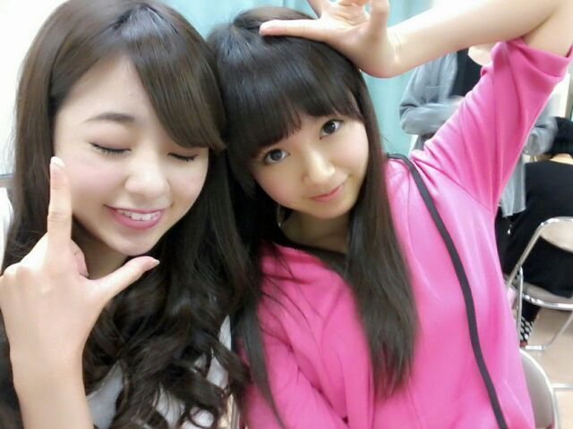
ろてぃー好きよ(〃ω〃)ふふふん
このひめたが着てるパーカーも
なかなか素敵な形してるんだけど
今度いつか紹介できたらしまーすー♪
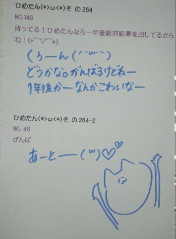
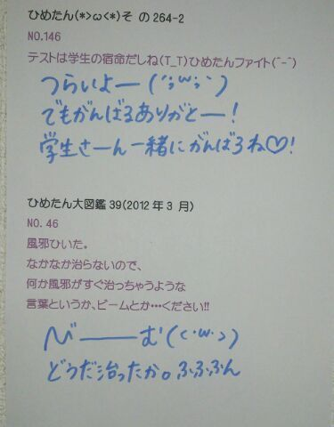
(＊´・ω・＊)
ひめたん大図鑑とは何か。
それは、いわゆる
「過去の質問返しをまとめたもの」って感じかな。
過去なので時制とかおかしなことになる質問も
中にはあるかもだけど、
ま、そゆことなんでね(*^^*)

975 おむすびころりんの話には色々なバリエーションがあるらしいですひめたんが知ってるおむすびころりんはどんな話カナ?
おむすびころりんの話には色々なバリエーションがあるらしいですひめたんが知ってるおむすびころりんはどんな話カナ?昔むかしおじいさんがおむすびを食べようとしました。
そしたら手が滑っておむすびが転がり落ちていきました。
おむすびは穴に落っこちてしまいました。
すると穴の中から
「おむすびころりんすっとんとん。」
という楽しそうな声が聞こえてきました。
おじいさんは愉快に思い、持っていた
もういっこのおむすびも穴に落としてみました。同様に
「おむすびころりんすっとんとん。おじいさんころりんすっとんとん」。
すると次の瞬間おじいさんは穴の中に吸い込まれてしまいました。穴の中はねずみの国でした。
「おじいさん、おむすびを落としてくれてありがとう。」
ねずみたちはお礼にごちそうを振る舞いました。
そしておじいさんが帰ろうとすると、ねずみがおじいさんにこう言いました。
「お土産に大きい箱か小さい箱、どちらか持って帰ってください。」
おじいさんは小さい箱を持って帰りました。
すると中から大判小判がたくさん出てきました!
それを聞いた隣のおじいさんは、早速次の日おむすびを穴へ一気に落としそれから隣のおじいさんは穴へ飛び込みました。
ねずみたちはごちそうを振る舞いました。
そしてお土産にと、大小の箱を差し出しました。
隣のおじいさんは思いました。
(ここでネコの物真似をしたら驚いてねずみが逃げる。
そうしたら大小両方の箱を持って帰れるではないか。)
そこで隣のおじいさんは言いました。
「にゃあお。」
驚いたねずみたちは逃げてしまいました。
にやにや。
すると!突然辺りが真っ暗になってしまいました!
箱も出口も見当たりません。
とうとう隣のおじいさんはモグラになってしまいました。
にゃんにゃん♪
976「ひめかわうぅぃぃね」と連呼しまくる謎の集団は覚えてるカナ?覚えとる(^O^)!
...滋賀だっけ?あれ富山?
977ポルノグラフィティ知ってるかな?好きな曲とかあったら教えてほしい〜な(^_^)もちろん知ってる♪
ハネウマライダーとか楽しいよね!
アミューズAAAってイベントで、武道館でタオル回したことあるある(o>ω<o)
978コメ返キターーーーー!っておもったけど俺の質問が無いのは気のせい?(笑)にゃ。
うっそ本当??突っ走りすぎて置いてきたかもしれーん
もっかい聞いてー'`
979みゅみゅとも仲良いだよね?普段どんな話をしているですか?若月『ひめたん！一緒に痩せよう！(笑)』
中元『うん!!』
若月『一緒に歩きにいこう！』
中元『うん!!いく！』
若月『頑張ろう！』
中元『うん!!』
若月『とりあえずひめたん可愛いな!』
中元『ぇへー♪(/ω＼*)照』
若月『ひめたん好きだぞ！』
中元『うちもすきぃー！』
若月『へへっ(σ*´∀｀)照』
こんなん(笑)
byみゅみゅ☆
980「日本ツインテール協会」ってゆーのが実在するらしいよ...(笑 知ってたぁ?へー可愛いいい☆
ひめたんも入れてもらおかな(*^^*)
とりあえず検索してみるしか!
981苦手な野菜とかありますか?にーんじんったまーねぎっじゃがーいもっぶたーにく
おなーべでっいたーめてっぐっつぐっつ煮ーまーしょ♪
質問から反れた←
ピーマン、とまと、かいわれ大根、なす、ピクルス、あとなんかあったけな。
982最近BUMPさんは聴いてるかな?相変わらず寝る前に音楽聴いてるんだけど
最近は曲再生した瞬間に寝てるからじっくり聴いてなーい(>_<)
983自動車レース見た事ありますか?ひめちゃんピンクの文字で書かれたいですぴんくの文字で書きましたよ(o>ω<o)♪
自動車レース見たことない以前に、自動車にもレースがあるんですね!
楽しそうだけど、ぎーがしゃんってなるの怖いっ
984野球の広島カープの事は知っていますか?知ってる選手いますか?カープ知っとるよ(^O^)/
といって、こちらも同じくあんま詳しくないけれども←
前けん栗けん創健ほーむ♪
...あっこれcmソングです。広島人には通じるはず。
985帽子はよくかぶりますか??2012年になってから1回もかぶってない多分!
春だし日焼けするの嫌だし、そろそろ帽子の季節かな(*'`*)
986両親のこと何て呼んでますか?(ノ・o・)ノ{ぱぱー!ままー!!
987よみうりランドでの一体感楽しかったよね?楽しかった!
ほんっと楽しかった(o>ω<o)!
一緒に盛り上がってくださったみなさん感動をありがとうですっ
988埼玉県は行ったことある?埼玉ある!
さいたまスーパーアリーナ行きました(^-^)♪
今日はおともだちの誕生日だったので
炭酸水を振りまくって
本日の主役に浴びせました( ^ω^ )
楽しかったったー♪
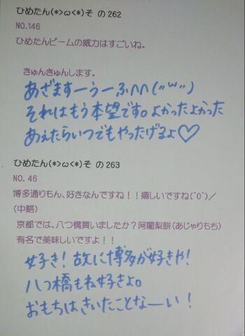
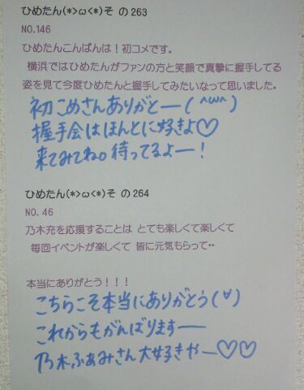
(＊´・ω・＊)
ひめたん大図鑑とは何か。
それは、いわゆる
「過去の質問返しをまとめたもの」って感じかな。
過去なので時制とかおかしなことになる質問も
中にはあるかもだけど、
ま、そゆことなんでね(*^^*)

957 個別で会えるんだけど今から緊張してる(゜ρ゜)笑どうやったら仲良く話せる?
個別で会えるんだけど今から緊張してる(゜ρ゜)笑どうやったら仲良く話せる?どうしても緊張しちゃうなら、いっそのことひめたんを好きじゃな...くな...
ったら困る(ノω;`)る
てかひめたんも緊張する
958乃木じゃーはHIMEKAWAじゃなくてHIMEKAの作ってもらえたのかな?HIMEKAWAジャージは幻と化しました。
ただいまHIMEKAジャージ製作していただいてるなう♪
959何か恐怖症とかある?(・ω・)ひとりの夜道は怖い。
ひとりのエレベーターもちょっと怖い。
飛ぶ虫さん、跳ぶ虫さん、
からすさん、さらに怖い。
何回解いても答えが合わない計算、
怪奇並に怖い-('・・`)←
何回数えても数が合わない階段と同じだよ。
計算って、怖い。
960親や兄弟姉妹を乃木坂メンバーから選んだらどんな家族になる?ぱぱ→かずみさん(高山一実chan)
まま→まいまい(深川麻衣chan)
長女→みさみさ(衛藤美彩chan)
次女→みゅみゅ(若月佑美chan)
三女→まりか(伊藤万理華chan)
末っ子ひめたん!
ひめたん的乃木坂家族選抜(^ω^)
961ガチャピンは好きですか?可愛いよねっ! 962ピルクルは好きですか?ああcmが可愛いやつ(^^)
お腹ぱかってあけるやつよね♪
飲んだことないけど、あのゆるゆる具合は好き!
963遅い後ろのほうのコメントもみてくれているかな?もちろん見てる☆
1日何回ブログ訪問してると思ってるのさ(`・・)どやあ
964広島駅のあたりでいい食べ物の店あればぜひ教えてくださいませ(^-^)「ミニヨン」(シュークリーム)
「としのや」(府中焼)
ぜひ行ってみてくださいませ♪
965中元さんの地元で自慢できる食べ物、飲み物は?お好み焼き、もみじまんじゅう(ω)!
966最近ひめかに会えなさすぎて夢にひめかがでてきた!!むしろ幻覚?も見えてきた!!笑967夢にひめたん出て来たんじゃけどこりゃひめたん依存症かね?(*^^*)重症!
中元先生が診察するので、とりあえずカルテに夢の内容を書き出して下さい//
9682nd個別大阪ないからひめたんに逢えないよ...どうしよう?寂しいね(;'∩`)
我慢できなかったら泣いてもいいよ?
ひめたん飛んでくよ?
あれ会えちゃうわ♪わら
969プレゼントしたいんだけど何がいいですか?お気持ちだけで十分嬉しいよー。
けどあえて答えるなら...
ひめきゅんさんが「これひめたん好きそうかも?」って思うものを
見てみたい(*^^*)心が繋がってるなら、ひめたんの好みもわかる...よね?
970好きなアーティストにももクロZ入ってたけどどの曲が好きなの?(^^ゞいちばんはオレンジノート!
この前ゆっきーな(柏幸奈chan)にももいろパンチのダンス教えてもらってから
それも好き(o>ω<o)♪
971ひめたんの行く高校ってどういう制服なの?なかなかお気に入りだよ(*/ω＼*)
ジャンパースカートの中学校生活を経た中元さんにとっては
上と下が離れてるだけで感動←
芋っ子中元(^^)
972「ちゃお」「りぼん」「なかよし」の中で何を読んでましたか?ちゃお派!
小2とかから読んでたよ(*^^*)
973富士急行ったことある-?ないー('・・`)
春休みだしどっかテーマパークとか行きたいなあ...
974山口に遊びに来たことあるのかな?ありますお(・∀・)
美川ムーバレーとか秋芳洞とか海響館とかとか♪
今日は
レコーディングしてきましたー∩^ω^∩
夏らしい曲になるんじゃないかなーと
ひめたは思っておりますー
お楽しみにー♪
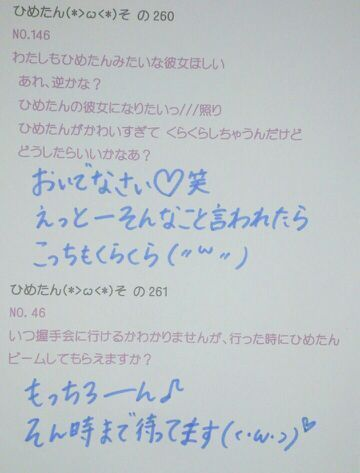
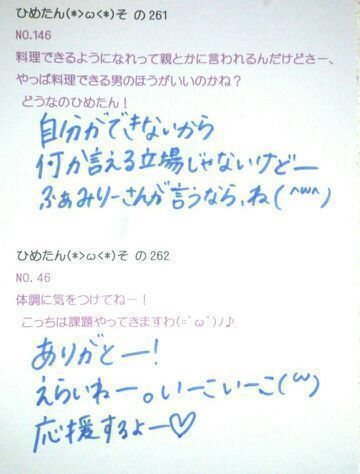
(＊´・ω・＊)